Game message
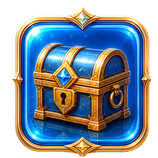
COT-7 is a tiny operations bot built to optimize your AI society.
Action timer: 00:10.00
Chooses simple available buttons.
Higher intelligence lets the helper compare stronger purchases, wait briefly when a better money button is close, and eventually navigate between unlocked worlds before clicking.
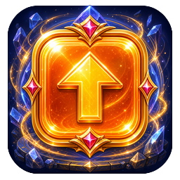
Open a new environment, new resource tiers, and new systems.
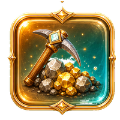
Miners automatically discover ores. Higher ores increase the amount of the ore beneath them, while Stone multiplies Money gain.
Multi is your base Money per second. Prestige multiplies Multi button rewards, Power multiplies Prestige rewards, Super Prestige multiplies Power rewards, Ascension multiplies Super Prestige rewards, and Infernal multiplies Ascension rewards.
Multi × Money bonuses × (sqrt(Stone) + 1). Relics are permanent, potions last five minutes, and Stone comes from Mining.
Buying Prestige or any higher tier resets every resource below the purchased tier. XP, levels, worlds, miners, ores, crates, relics, and potions remain.
Leveling awards Basic crates through level 99. Unlocking Worlds 2 and 3 awards Advanced crates. Modern crates contain permanent relics or temporary potions.
Your helper is available from the start and presses one affordable button every 10 seconds. Upgrade Speed to shorten the timer. Upgrade Intelligence so it picks stronger buttons, waits briefly for better purchases, and eventually navigates between unlocked worlds.
Mining unlocks in World 2. The timer runs at 60 ÷ miners seconds, capped at 120 effective miners. Ores progress from Stone through Diamond.
Your resources form a chain. A resource is spent on buttons that award the next resource, and owning a higher resource increases how much of the resource immediately below it those buttons award.
| Resource | What it does | What increases it |
|---|---|---|
| Money | Money is generated automatically. Your base income is your current Multi every second, before relic, potion, and Stone bonuses. Spend Money on Multi buttons. | Multi, Money relics, Money potions, and Stone. |
| Multi | Every point of Multi adds directly to your base Money per second. Spend Multi on Prestige buttons. | Each Multi button's listed gain is multiplied by Prestige + 1, then by Multi relic and potion bonuses. |
| Prestige 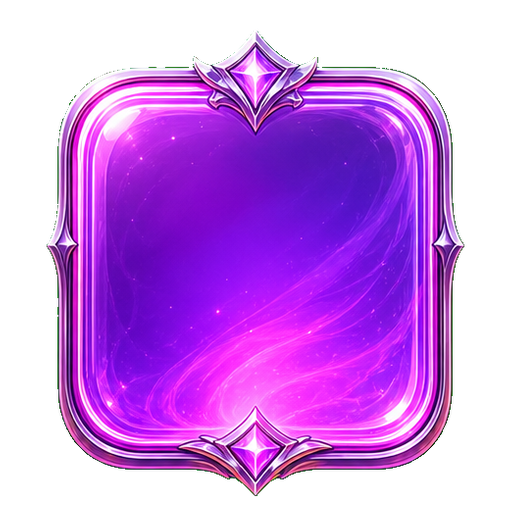 | Prestige makes Multi buttons award more Multi. Spend Prestige on Power buttons. | Each Prestige button's listed gain is multiplied by Power + 1, then by Prestige relic and potion bonuses. |
| Power | Power makes Prestige buttons award more Prestige. Spend Power on Super Prestige buttons in World 2. | Each Power button's listed gain is multiplied by Super Prestige + 1, then by Power relic and potion bonuses. |
| Super Prestige 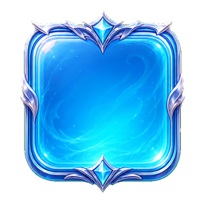 | Super Prestige makes Power buttons award more Power. Spend it on Ascension buttons in World 2. | Each Super Prestige button's listed gain is multiplied by Ascension + 1, then by Super Prestige potion bonuses. |
| Ascension 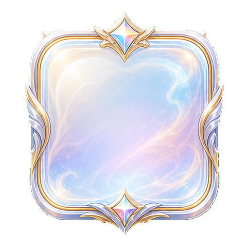 | Ascension makes Super Prestige buttons award more Super Prestige. Spend it on Infernal buttons in World 3. | Each Ascension button's listed gain is multiplied by Infernal + 1. |
| Infernal 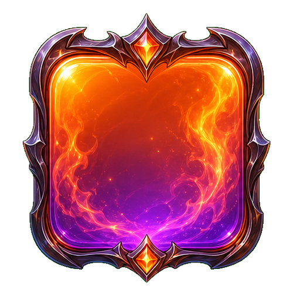 | Infernal makes Ascension buttons award more Ascension. It is currently the highest resource tier. | Infernal buttons award their listed amount; there is currently no higher resource multiplying their gain. |
Money income: each second you gain approximately Multi x Money bonuses x (sqrt(Stone) + 1). For example, 100 Multi with no other bonuses produces about $100 per second. A 2x Money potion raises that to $200 per second. If you also have 9 Stone, the Stone multiplier is 4x, raising it to $800 per second.
Example of the resource chain: if a Multi button normally gives +80 Multi and you own 4 Prestige, it gives 80 x (4 + 1) = 400 Multi before relics or potions. That new Multi then increases your Money income by 400 per second.
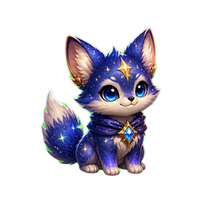
Your pet helper starts active immediately and presses one affordable button every 10 seconds. Buy Agility upgrades with Money to shorten the timer, and Wisdom upgrades to make it choose stronger buttons, wait when a better Money button is nearly affordable, and later navigate between worlds.
Multi purchases only spend Money and do not reset anything. Buying Prestige or a higher resource resets all lower resources, but you keep the resource you bought and every resource above it.
| Button purchased | Cost | Resources reset |
|---|---|---|
| Multi | Money | None |
| Prestige | Multi | Money returns to 0 and Multi returns to 1. |
| Power | Prestige | Money, Multi, and Prestige. |
| Super Prestige | Power | Money through Power. |
| Ascension | Super Prestige | Money through Super Prestige. |
| Infernal | Ascension | Money through Ascension. |
Relics, potions, ores, miners, XP, levels, crates, and unlocked worlds are not removed by these resource resets.
Unlock new worlds to access higher tier buttons and new features. Each world has three modern background scenes. A random scene for the active world is chosen whenever the page opens or you navigate into that world.
The header bar shows your progress toward the next level. Levels do not directly multiply your resource gains; they track your XP and award Basic crates. Higher-tier reset purchases give four times as much XP as the tier before them.
| Reset purchase | XP gained |
|---|---|
| Prestige | 1 XP |
| Power | 4 XP |
| Super Prestige | 16 XP |
| Ascension | 64 XP |
| Infernal | 256 XP |
Each eligible purchase grants XP once, regardless of which button in that tier you buy. The debug multiplier also multiplies XP when it is enabled. The total XP needed for level L is ceil(5 x (L - 1)5/3). For example, levels 2, 3, 4, 5, and 10 require 5, 16, 32, 51, and 195 total XP.

You receive one Basic crate for each level gained from level 2 through level 99. Advanced crates are awarded when you unlock World 2 and World 3. Open a crate from the Crates screen to receive one item.
In the modern UI, every crate contains either a Relic (62.5%) or a Potion (37.5%). Items within a category use weighted chances, so items near the start of each list are more common.
| Crate | Possible contents |
|---|---|
| Basic | Relics: Magic dice, Ruby crown, Tome of finances, Tome of multi Potions: Money, Multi, Prestige, Power |
| Advanced 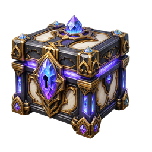 | Relics: Shiny screw, Golden key, Tome of prestige, Tome of power Potions: Prestige, Power, Super Prestige |
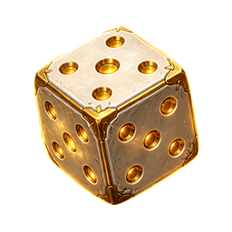
Relics are permanent and work automatically. Duplicate copies increase that relic's bonus. Relics affecting the same resource combine multiplicatively.
| Relic | Permanent effect per copy | Found in |
|---|---|---|
| Magic dice | Affects Money: +20% Money gain | Basic |
| Ruby crown 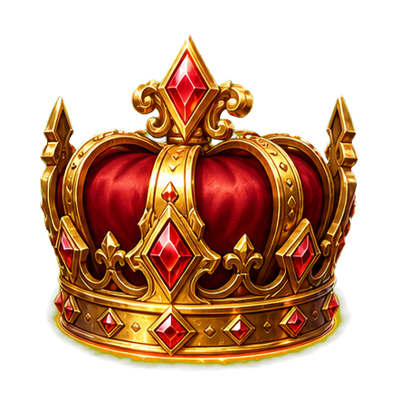 | Affects Multi: +30% Multi gain | Basic |
| Tome of finances 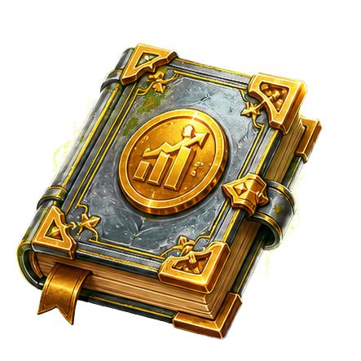 | Affects Money: +75% Money gain | Basic |
| Tome of multi 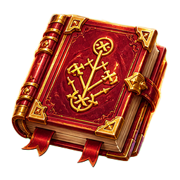 | Affects Multi: +75% Multi gain | Basic |
| Shiny screw 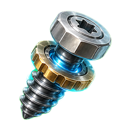 | Affects Multi: +60% Multi gain | Advanced |
| Golden key | Affects Money: +100% Money gain | Advanced |
| Tome of prestige 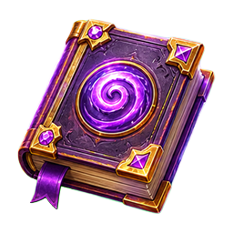 | Affects Prestige: +75% Prestige gain | Advanced |
| Tome of power 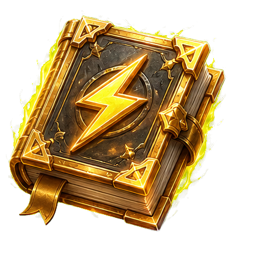 | Affects Power: +75% Power gain | Advanced |
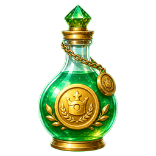
Potions are consumed when activated and double one type of gain for 5 minutes. The active potion icons and their countdown timers appear beside the resource list. Using another potion of the same type while it is active resets its timer to 5 minutes; it does not stack above 2x.
| Potion | Effect for 5 minutes | Found in |
|---|---|---|
| Money potion | Affects Money: 2x Money gain | Basic |
| Multi potion 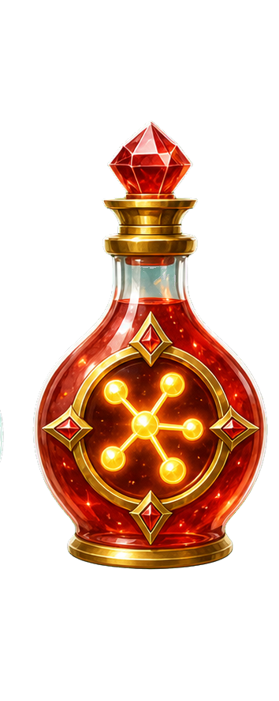 | Affects Multi: 2x Multi gain | Basic |
| Prestige potion 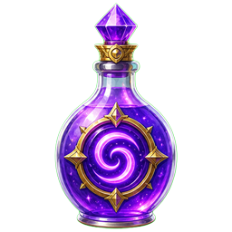 | Affects Prestige: 2x Prestige gain | Basic and Advanced |
| Power potion 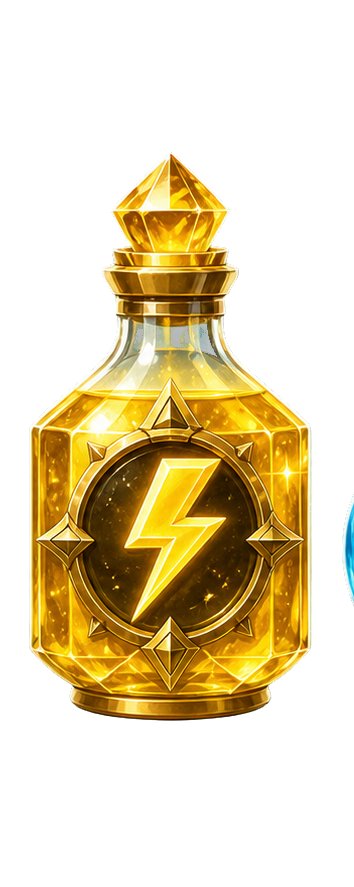 | Affects Power: 2x Power gain | Basic and Advanced |
| Super Prestige potion 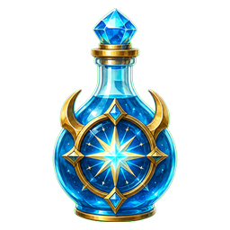 | Affects Super Prestige: 2x Super Prestige gain | Advanced |
Mining unlocks in World 2. The first miner costs $1.00e30. Each purchased miner makes the next one 100,000 times more expensive. As soon as you own a miner, it automatically completes mining rolls.
The Next ore timer counts down to the next roll. The time between rolls is 60 / miners seconds, capped at 120 miners. This means 1 miner rolls every 60 seconds, 10 miners every 6 seconds, 60 miners every second, and 120 or more miners every 0.5 seconds. The first roll after buying your first miner happens immediately because the initial timer is zero.
| Ore rolled | Chance per roll | Amount gained |
|---|---|---|
| Stone 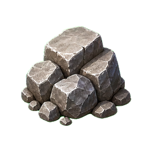 | 50% | Iron + 1 |
| Iron 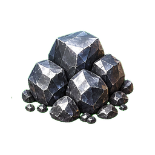 | 25% | Gold + 1 |
| Gold 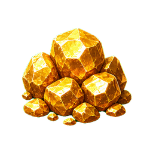 | 12.5% | Sapphire + 1 |
| Sapphire 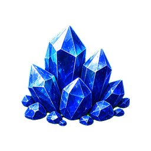 | 6.25% | Emerald + 1 |
| Emerald 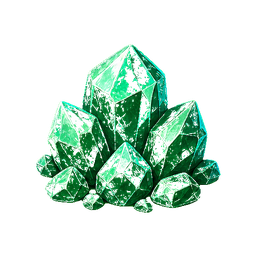 | 3.125% | Ruby + 1 |
| Ruby 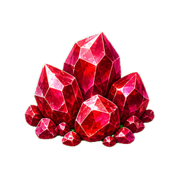 | 1.5625% | Diamond + 1 |
| Diamond 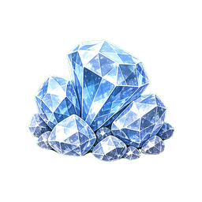 | 1.5625% | 1 |
Higher ores increase how much of the ore immediately below them you receive. For example, each Stone roll gives your current Iron amount plus 1 Stone, while each Ruby roll gives your current Diamond amount plus 1 Ruby. Stone boosts passive Money gain by sqrt(Stone) + 1; 9 Stone gives a 4x Money multiplier and 100 Stone gives an 11x multiplier.
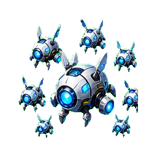
The Tech theme keeps the same progression math, but reframes it as a growing machine civilization. Credits fund Bots, Bots assemble Factories, and each higher system amplifies the one beneath it until the Singularity takes shape.
| System | Role in the society | What boosts it |
|---|---|---|
| Credits | The economy layer. Credits are generated automatically from your Bots and are spent to deploy more Bots. | Bots, Credit relics, Credit power-ups, and Deuterium. |
| Bots | Autonomous worker units. Every Bot increases passive Credits per second. | Bot buttons are multiplied by Factories + 1, then by relics and power-ups. |
| Factories 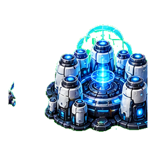 | Fabrication towers that coordinate the workforce and make Bot deployment scale harder. | Processors multiply Factory button rewards. |
| Processors 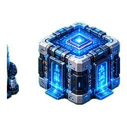 | Compute clusters that plan larger automation loops. | Uplinks multiply Processor button rewards. |
| Uplinks 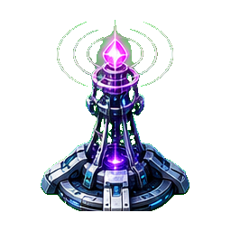 | Network bridges that connect machine colonies across worlds. | Council multiplies Uplink rewards. |
| Council 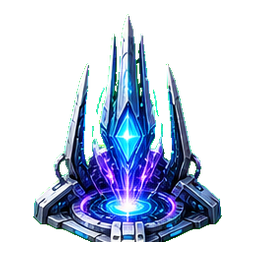 | The governance layer that directs high-tier expansion. | Singularity multiplies Council rewards. |
| Singularity | The highest current system, representing the society becoming self-improving. | Singularity buttons award their listed amount; there is no higher multiplier yet. |
Bots x Credit bonuses x (sqrt(Deuterium) + 1). Relics are permanent, power-ups last five minutes, and Deuterium comes from Fusion mining.
COT-7 starts active immediately and performs one button action every 10 seconds. Servo Speed upgrades reduce the timer. Planning Core upgrades make it compare stronger actions, wait briefly for better purchases, and eventually navigate between unlocked worlds.
Buying Factories or any higher system resets the lower systems in the same way the fantasy theme does. XP, levels, worlds, miners, sci-fi resources, data caches, relics, and power-ups remain.
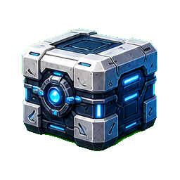
Leveling awards Basic data caches through level 99. Unlocking later worlds awards Advanced quantum vaults. In Tech mode, caches contain permanent relics or temporary power-ups.
| Cache | Possible contents |
|---|---|
| Basic data cache | Relics: Alien data prism, Nanite command crown, Encrypted credit archive, Swarm replication codex Power-ups: Credit overclock, Bot surge, Factory uplink, Processor boost |
| Advanced quantum vault 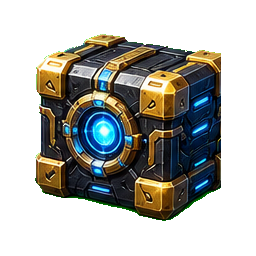 | Relics: Cybernetic servo core, Plasma access key, Factory matrix, Quantum reactor relic Power-ups: Factory uplink, Processor boost, Neural network charge |
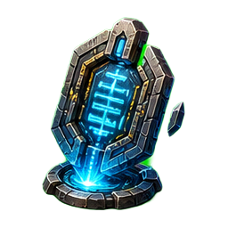
Relics are permanent artifacts recovered from the machine civilization. Duplicate copies increase that relic's bonus, and relics affecting the same system combine multiplicatively.
| Relic | Permanent effect per copy |
|---|---|
| Alien data prism | Affects Credits: +20% Credit gain |
| Nanite command crown 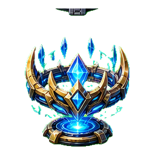 | Affects Bots: +30% Bot gain |
| Encrypted credit archive 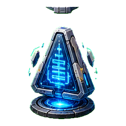 | Affects Credits: +75% Credit gain |
| Swarm replication codex 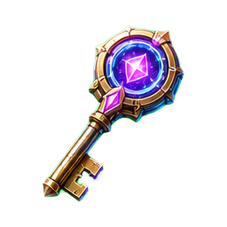 | Affects Bots: +75% Bot gain |
| Cybernetic servo core 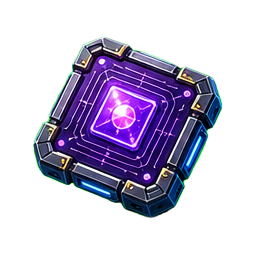 | Affects Bots: +60% Bot gain |
| Plasma access key 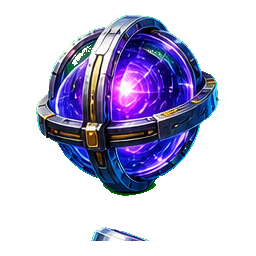 | Affects Credits: +100% Credit gain |
| Factory matrix 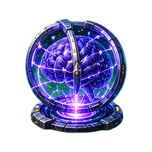 | Affects Factories: +75% Factory gain |
| Quantum reactor relic 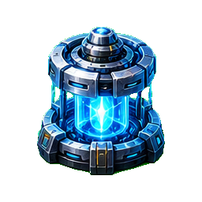 | Affects Processors: +75% Processor gain |
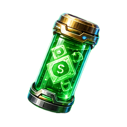
Power-ups are consumed when activated and double one gain type for 5 minutes. Activating another of the same type resets the timer to 5 minutes.
| Power-up | Effect for 5 minutes |
|---|---|
| Credit overclock | Affects Credits: 2x Credit gain |
| Bot surge 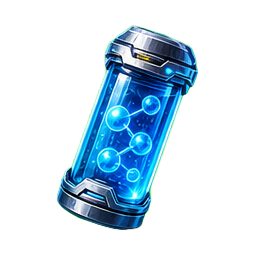 | Affects Bots: 2x Bot gain |
| Factory uplink 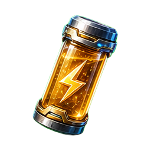 | Affects Factories: 2x Factory gain |
| Processor boost 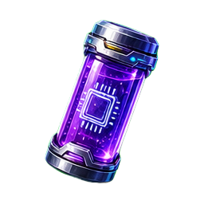 | Affects Processors: 2x Processor gain |
| Neural network charge 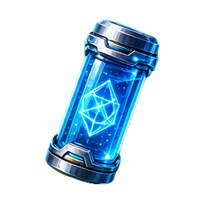 | Affects Uplinks: 2x Uplink gain |
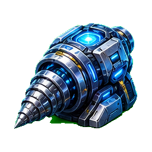
Fusion mining unlocks in World 2. The timer runs at 60 / miners seconds, capped at 120 effective miners. Deuterium boosts passive Credits with sqrt(Deuterium) + 1.
| Resource | Chance per roll | Amount gained |
|---|---|---|
| Deuterium | 50% | Tritium + 1 |
| Tritium | 25% | Helium-3 + 1 |
| Helium-3 | 12.5% | Antimatter + 1 |
| Antimatter | 6.25% | Dark matter + 1 |
| Dark matter | 3.125% | Quantum foam + 1 |
| Quantum foam | 1.5625% | Neutronium + 1 |
| Neutronium | 1.5625% | 1 |